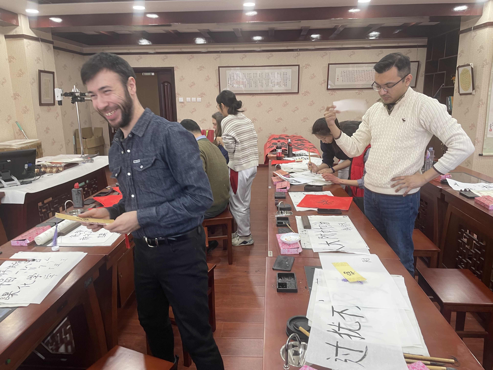

Winter break is comming. I still find it hard to believe that the first semester of grade 11 is comming to an end. This also indicates that my high school life is half way there. Bearing such thoughts, a heavy feeling of anxiety hang over me. Looking back at the past 4 months, I feel like I haven't accomplished a thing. Yet I felt so exhausted. I think it's time to list what I've done in the first semester so that I feel better. After all, the sole reason people act in a certain way is to feel more comfortable.
That's basically what I did in the past semester, wow, that's a lot of failures. There are a few problems:
Just do it! Carpe diem. Come on myself, you've got this. Only and just more than half a year left, give everything you have and show them what you've got!
Apart from the regular tasks like learning new vocabularies (very well executed), preparing for the next round of USACO (not very well executed until yesterday that I finally got the hang of focusing and thinking deeply), watching ML specialization course (not very well executed unitl today I finally finished the second part of it), and reading Introduction to Computational Sociology (terribly executed for that I only read one chapter, have to read more!), there are a few special things that happened.
First, in the volleyball league final that finally took place this Tuesday, we won! I personally think if they were to choose an MVP, I am the one.

Second, I'm done with my physics experiment (hopefully nothing goes wrong).
Third, we taught some foreign teachers calligraphy.
Fourth, I finished Frankenstein. I found myself in some extent similar to Victor Frankenstein. (1) On some issues, we just can't decide. (2) We always fall ill. (3) We always blame ourselves. (4) We are both ambitious but unable to achieve our goals. However, we are also different. I still have a bright future, and it takes action to turn ambition into reality.
It seems like that it's inappropriate to call it a winter break because I have so many things to do.